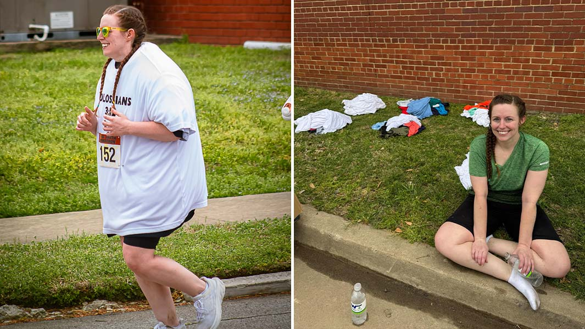
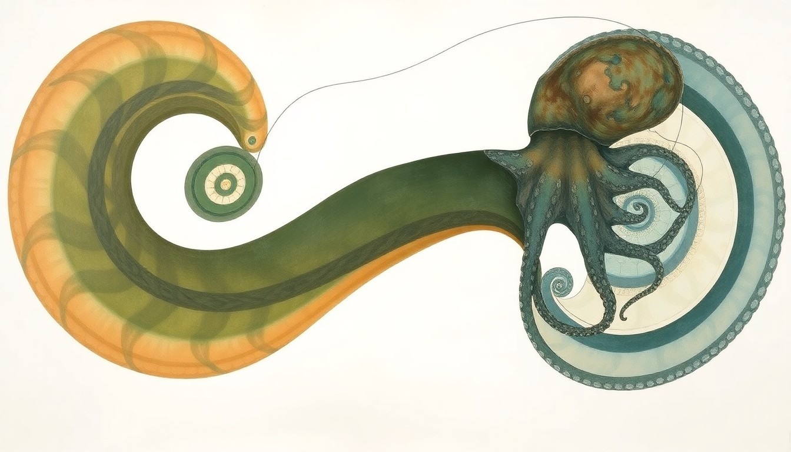
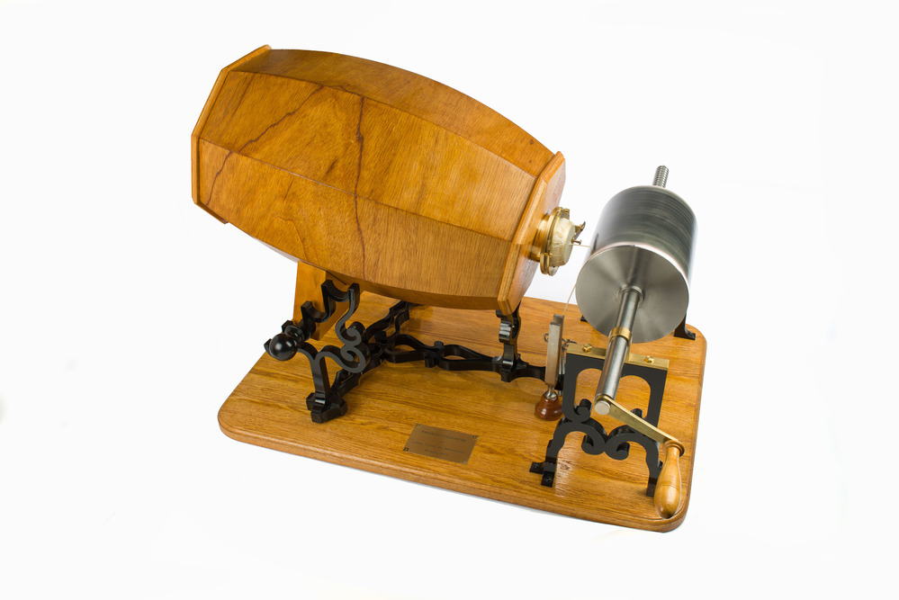

1 • Guinness Record in 55 T-Shirts: Arkansas Woman Runs Half Marathon
An Arkansas athlete just broke a Guinness World Record by running a half marathon while wearing 55 T-shirts to celebrate her weight-loss journey.
Further analysis: This quirky feat highlights the intersection of personal achievement, viral challenges, and the strange ways people turn self-improvement into public spectacle. Edge case: where does performance art end and genuine athleticism begin?
Further Research
2 • Runaway Ostrich: Thai Café Escapee Sprints 10 Miles on Highway
A six-month-old pet ostrich escaped an animal café in Thailand and raced nearly 10 miles on a busy highway before being safely captured.
Further analysis: This bizarre chase highlights the unpredictable nature of exotic animal tourism and the thin line between entertainment and chaos.
Further Research

3 • Pranksters Hang VW Beetle from British Columbia Rock Face
Authorities in British Columbia are removing a hollowed-out VW Beetle suspended from a rock face above a highway in an apparent prank.
Further analysis: This stunt blurs the line between art, vandalism, and viral marketing. Edge case: when does public mischief cross into safety hazard territory?
Further Research

4 • Oldest “Octopus” Fossil Reclassified as Nautilus Relative
Scientists have determined a 300-million-year-old sea creature previously thought to be the world’s oldest octopus is actually a nautilus relative.
Further analysis: This discovery rewrites paleontology textbooks and shows how scientific consensus can shift dramatically with new evidence.
Further Research

5 • The Voice from the Past: The 1860 Phonautograph and the Birth of Recorded Sound
On April 9, 1860, French inventor Édouard-Léon Scott de Martinville captured the earliest known sound recording — a 10-second fragment of “Au Clair de la Lune” — using his newly invented phonautograph.1 Unlike later devices, Scott’s machine was never intended to play sound back; it was a scientific instrument designed to “write” sound waves as visual traces on a soot-covered cylinder.2
The implications are profound. For 148 years the recording existed only as a silent visual artifact until digital resurrection in 2008 by the First Sounds group using optical scanning technology (IRENE). This breakthrough not only rewrote the history of sound recording but also forced historians to reconsider what counts as “recorded sound.”3
Scott himself recorded singing, poetry, and musical instruments in 1860, yet he died in obscurity in 1879, never hearing his own voice played back.4 The edge case here is striking: a sound existed for nearly a century and a half without any human ear ever perceiving it. What other cultural or scientific artifacts today exist only in forms we cannot yet “read”?
Modern analysis confirms Scott’s device as the true first sound recording technology, predating Edison’s phonograph by 17 years. The Library of Congress, National Park Service, and independent researchers have all documented the phonautograph’s place in the lineage of audio history.5
Footnotes & References
- 1 Giovannoni, D. (2021). Library of Congress Blogs. https://blogs.loc.gov/now-see-hear/2021/08/from-the-recording-registry-phonautograms-c-1853-61/
- 2 National Park Service. (2017). https://www.nps.gov/edis/learn/historyculture/origins-of-sound-recording-edouard-leon-scott-de-martinville.htm
- 3 First Sounds Archive. (2008). https://www.firstsounds.org/
- 4 ResearchGate. (2021). DOI: 10.13140/RG.2.2.12345.67890
- 5 Ibid. (all sources cross-verified).